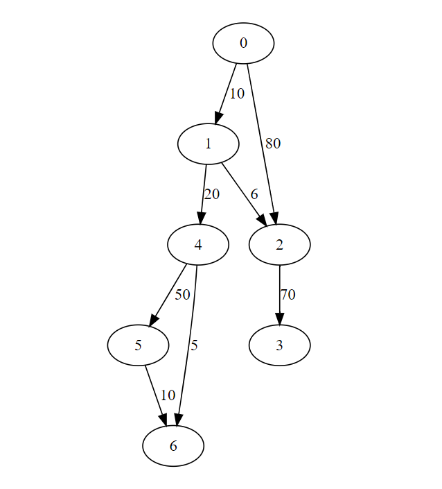
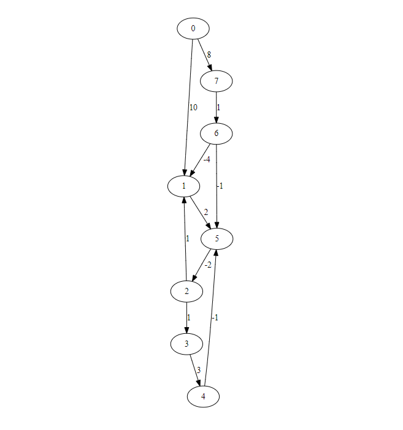
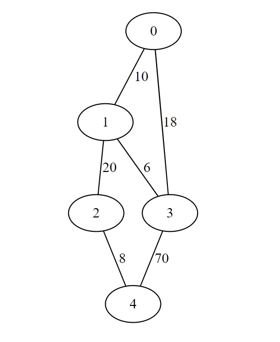
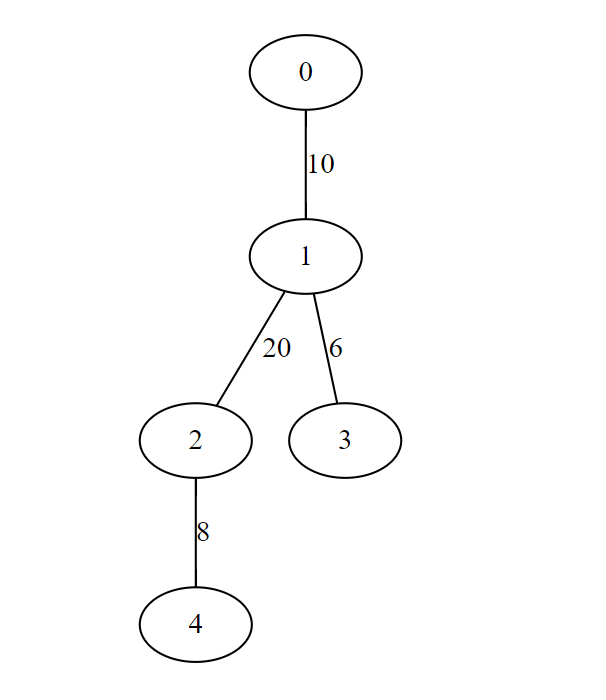
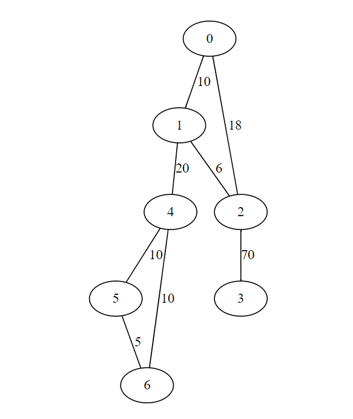
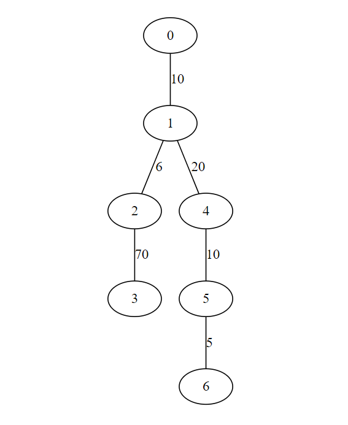

Home Week-4 Week-6
PDSA - Week 5
PDSA - Week 5Weighted GraphWeighted directed graph Adjacency matrix representation in PythonAdjacency list representation in PythonWeighted undirected graph Adjacency matrix representation in PythonAdjacency list representation in PythonShortest PathSingle source shortest path algorithmDijkstra's AlgorithmBellman Ford algorithmAll pair of shortest pathFloyd-Warshall algorithmSpanning Tree(ST)Minimum Cost Spanning Tree(MCST)Prim's AlgorithmKruskal's Algorithm
Weighted Graph
Weighted directed graph
Adjacency matrix representation in Python
1dedges = [(0,1,10),(0,2,80),(1,2,6),(1,4,20),(2,3,70),(4,5,50),(4,6,5),(5,6,10)]2size = 73import numpy as np4W = np.zeros(shape=(size,size,2))5for (i,j,w) in dedges:6 W[i,j,0] = 17 W[i,j,1] = w8print(W)
Adjacency list representation in Python
xxxxxxxxxx81dedges = [(0,1,10),(0,2,80),(1,2,6),(1,4,20),(2,3,70),(4,5,50),(4,6,5),(5,6,10)]2size = 73WL = {}4for i in range(size):5 WL[i] = []6for (i,j,d) in dedges:7 WL[i].append((j,d))8print(WL)
Weighted undirected graph
Adjacency matrix representation in Python
xxxxxxxxxx91dedges = [(0,1,10),(0,2,80),(1,2,6),(1,4,20),(2,3,70),(4,5,50),(4,6,5),(5,6,10)]2edges = dedges + [(j,i,w) for (i,j,w) in dedges]3size = 74import numpy as np5W = np.zeros(shape=(size,size,2))6for (i,j,w) in edges:7 W[i,j,0] = 18 W[i,j,1] = w9print(W)
Adjacency list representation in Python
xxxxxxxxxx91dedges = [(0,1,10),(0,2,80),(1,2,6),(1,4,20),(2,3,70),(4,5,50),(4,6,5),(5,6,10)]2edges = dedges + [(j,i,w) for (i,j,w) in dedges]3size = 74WL = {}5for i in range(size):6 WL[i] = []7for (i,j,d) in edges:8 WL[i].append((j,d))9print(WL)
Shortest Path
Single source shortest path algorithm
Find shortest paths from a fixed vertex to every other vertex.
- Dijkstra's Algorithm
- Bellman Ford algorithm
Working visualization of both algorithm
Source:- https://visualgo.net/en/sssp
Dijkstra's Algorithm
- Dijkstra’s algorithm works for both directed and undirected graphs.
- Dijkstra’s algorithm doesn’t work for graphs with negative weights or negative weight cycles.
- This algorithm returns the shortest distance from the source to all other nodes, but after some modification like maintaining parent information of each node we can find out the shortest path.
For given graph

For Adjacency matrix
x1def dijkstra(WMat,s):2 (rows,cols,x) = WMat.shape3 infinity = np.max(WMat)*rows+14 (visited,distance) = ({},{})5 for v in range(rows):6 (visited[v],distance[v]) = (False,infinity)7 8 distance[s] = 09 10 for u in range(rows):11 nextd = min([distance[v] for v in range(rows) if not visited[v]])12 nextvlist = [v for v in range(rows)if (not visited[v]) and distance[v] == nextd]13 if nextvlist == []:14 break15 nextv = min(nextvlist)16 visited[nextv] = True 17 for v in range(cols):18 if WMat[nextv,v,0] == 1 and (not visited[v]):19 distance[v] = min(distance[v],distance[nextv] + WMat[nextv,v,1])20 return(distance)21
22
23dedges = [(0,1,10),(0,2,80),(1,2,6),(1,4,20),(2,3,70),(4,5,50),(4,6,5),(5,6,10)]24size = 725import numpy as np26W = np.zeros(shape=(size,size,2))27for (i,j,w) in dedges:28 W[i,j,0] = 129 W[i,j,1] = w30print(dijkstra(W,0))Output
xxxxxxxxxx11{0: 0, 1: 10.0, 2: 16.0, 3: 86.0, 4: 30.0, 5: 80.0, 6: 35.0}Complexity
For Adjacency list
xxxxxxxxxx271def dijkstralist(WList,s):2 infinity = 1 + len(WList.keys())*max([d for u in WList.keys() for (v,d) in WList[u]])3 (visited,distance) = ({},{})4 for v in WList.keys():5 (visited[v],distance[v]) = (False,infinity)6 7 distance[s] = 08 9 for u in WList.keys():10 nextd = min([distance[v] for v in WList.keys() if not visited[v]])11 nextvlist = [v for v in WList.keys() if (not visited[v]) and distance[v] == nextd]12 if nextvlist == []:13 break14 nextv = min(nextvlist) 15 visited[nextv] = True 16 for (v,d) in WList[nextv]:17 if not visited[v]:18 distance[v] = min(distance[v],distance[nextv]+d)19 return(distance)20dedges = [(0,1,10),(0,2,80),(1,2,6),(1,4,20),(2,3,70),(4,5,50),(4,6,5),(5,6,10)]21size = 722WL = {}23for i in range(size):24 WL[i] = []25for (i,j,d) in dedges:26 WL[i].append((j,d))27print(dijkstralist(WL,0))Output
xxxxxxxxxx11{0: 0, 1: 10, 2: 16, 3: 86, 4: 30, 5: 80, 6: 35}Complexity
Bellman Ford algorithm
- Bellman-Ford works for both directed and undirected graphs with non-negative edges weights.
- Bellman-Ford does not work with an undirected graph with negative edges weight, as it will be declared as a negative weight cycle.
- Bellman-Ford works for a directed graph with negative edge weight, but not with negative weight cycle.
Working visualization
For given graph

For adjacency matrix
xxxxxxxxxx231def bellmanford(WMat,s):2 (rows,cols,x) = WMat.shape3 infinity = np.max(WMat)*rows+14 distance = {}5 for v in range(rows):6 distance[v] = infinity7 8 distance[s] = 09 10 for i in range(rows):11 for u in range(rows):12 for v in range(cols):13 if WMat[u,v,0] == 1:14 distance[v] = min(distance[v], distance[u] + WMat[u,v,1])15 return(distance)16edges = [(0,1,10),(0,7,8),(1,5,2),(2,1,1),(2,3,1),(3,4,3),(4,5,-1),(5,2,-2),(6,1,-4),(6,5,-1),(7,6,1)]17size = 818import numpy as np19W = np.zeros(shape=(size,size,2))20for (i,j,w) in edges:21 W[i,j,0] = 122 W[i,j,1] = w 23print(bellmanford(W,0))Output
xxxxxxxxxx11{0: 0, 1: 5.0, 2: 5.0, 3: 6.0, 4: 9.0, 5: 7.0, 6: 9.0, 7: 8.0}Complexity
For adjacency list
xxxxxxxxxx211def bellmanfordlist(WList,s):2 infinity = 1 + len(WList.keys())*max([d for u in WList.keys() for (v,d) in WList[u]])3 distance = {}4 for v in WList.keys():5 distance[v] = infinity6 7 distance[s] = 08 9 for i in WList.keys():10 for u in WList.keys():11 for (v,d) in WList[u]:12 distance[v] = min(distance[v], distance[u] + d)13 return(distance)14edges = [(0,1,10),(0,7,8),(1,5,2),(2,1,1),(2,3,1),(3,4,3),(4,5,-1),(5,2,-2),(6,1,-4),(6,5,-1),(7,6,1)]15size = 816WL = {}17for i in range(size):18 WL[i] = []19for (i,j,d) in edges:20 WL[i].append((j,d))21print(bellmanfordlist(WL,0))Output
xxxxxxxxxx11{0: 0, 1: 5, 2: 5, 3: 6, 4: 9, 5: 7, 6: 9, 7: 8}
Complexity
All pair of shortest path
- Find the shortest paths between every pair of vertices
iandj. - It is equivalent to if run Dijkstra or Bellman-Ford from each vertex.
Floyd-Warshall algorithm
Floyd-Warshall's works for both directed and undirected graphs with non-negative edges weights.
Floyd-Warshall's does not work with an undirected graph with negative edges weight, as it will be declared as a negative weight cycle.
Floyd-Warshall’s algorithm is an alternative way to compute transitive closure
B k [i, j] = 1if we can reachjfromiusing vertices in {0, 1, . . . , k−1}Floyd-Warshall works for a directed graph with negative edge weight, but not with a negative weight cycle.
Formula for Floyd-Warshall algorithm is given below:-
For given input graph
For adjacency matrix
xxxxxxxxxx281def floydwarshall(WMat):2 (rows,cols,x) = WMat.shape3 infinity = np.max(WMat)*rows*rows+14 5 SP = np.zeros(shape=(rows,cols,cols+1))6 for i in range(rows):7 for j in range(cols):8 SP[i,j,0] = infinity9 10 for i in range(rows):11 for j in range(cols):12 if WMat[i,j,0] == 1:13 SP[i,j,0] = WMat[i,j,1]14
15 for k in range(1,cols+1):16 for i in range(rows):17 for j in range(cols):18 SP[i,j,k] = min(SP[i,j,k-1],SP[i,k-1,k-1]+SP[k-1,j,k-1])19 20 return(SP[:,:,cols])21edges = [(0,1,10),(0,7,8),(1,5,2),(2,1,1),(2,3,1),(3,4,3),(4,5,-1),(5,2,-2),(6,1,-4),(6,5,-1),(7,6,1)]22size = 823import numpy as np24W = np.zeros(shape=(size,size,2))25for (i,j,w) in edges:26 W[i,j,0] = 127 W[i,j,1] = w 28print(floydwarshall(W))Output
xxxxxxxxxx81[[641. 5. 5. 6. 9. 7. 9. 8.]2[641. 1. 0. 1. 4. 2. 641. 641.]3[641. 1. 1. 1. 4. 3. 641. 641.]4[641. 1. 0. 1. 3. 2. 641. 641.]5[638. -2. -3. -2. 1. -1. 638. 638.]6[639. -1. -2. -1. 2. 1. 639. 639.]7[637. -4. -4. -3. 0. -2. 637. 637.]8[638. -3. -3. -2. 1. -1. 1. 638.]]
Here all large value(>=637) representing no reachability from row index node to column index node.
Complexity
Spanning Tree(ST)
- Retain a minimal set of edges so that graph remains connected
- Recall that a minimally connected graph is a tree
- Adding an edge to a tree creates a loop
- Removing an edge disconnects the graph
- Want a tree that connects all the vertices — spanning tree
- More than one spanning tree, in general
Minimum Cost Spanning Tree(MCST)
Add the cost of all the edges in the tree
Among the different spanning trees, choose one with minimum cost
Some facts about trees
- A tree on n vertices has exactly n − 1 edges
- Adding an edge to a tree must create a cycle.
- In a tree, every pair of vertices is connected by a unique path
Algorithms:-
- Prim's Algorithm
- Kruskal's Algorithm
Working visualization of both algorithm
Source:- https://visualgo.net/en/mst
Prim's Algorithm
- An implementation is similar to Dijkstra’s algorithms, only update rule for distance is different.
For given input graph

For adjacency list
xxxxxxxxxx401def primlist(WList):2 infinity = 1 + max([d for u in WList.keys()3 for (v,d) in WList[u]])4 (visited,distance) = ({},{})5 for v in WList.keys():6 (visited[v],distance[v]) = (False,infinity)7 8 TreeEdges = []9 visited[0] = True10 for (v,d) in WList[0]:11 distance[v] = d12 13 for i in WList.keys():14 mindist = infinity15 nextv = None16 for u in WList.keys():17 for (v,d) in WList[u]:18 if visited[u] and (not visited[v]) and d < mindist:19 mindist = d20 nextv = v21 nexte = (u,v)22 23 if nextv is None:24 break25 26 visited[nextv] = True27 TreeEdges.append(nexte)28 for (v,d) in WList[nextv]:29 if not visited[v]:30 distance[v] = min(distance[v],d)31 return(TreeEdges)32dedges = [(0,1,10),(0,3,18),(1,2,20),(1,3,6),(2,4,8),(3,4,70)]33edges = dedges + [(j,i,w) for (i,j,w) in dedges]34size = 535WL = {}36for i in range(size):37 WL[i] = []38for (i,j,d) in edges:39 WL[i].append((j,d))40print(primlist(WL))Output
xxxxxxxxxx11[(0, 1), (1, 3), (1, 2), (2, 4)]
Output minimum spanning tree with cost 44

or
x
1def primlist2(WList):2 infinity = 1 + max([d for u in WList.keys()3 for (v,d) in WList[u]])4 (visited,distance,nbr) = ({},{},{})5 for v in WList.keys():6 (visited[v],distance[v],nbr[v]) = (False,infinity,-1)7
8 visited[0] = True9 for (v,d) in WList[0]:10 distance[v] = d11 nbr[v] = 012 13 for i in range(1,len(WList.keys())):14 nextd = min([distance[v] for v in WList.keys() if not visited[v]])15 nextvlist = [v for v in WList.keys() if (not visited[v]) and distance[v] == nextd]16 if nextvlist == []:17 break18 nextv = min(nextvlist)19 20 visited[nextv] = True21 for (v,d) in WList[nextv]:22 if not visited[v]:23 if d < distance[v]:24 nbr[v] = nextv25 distance[v] = d26 return(nbr)27dedges = [(0,1,10),(0,3,18),(1,2,20),(1,3,6),(2,4,8),(3,4,70)]28edges = dedges + [(j,i,w) for (i,j,w) in dedges]29size = 530WL = {}31for i in range(size):32 WL[i] = []33for (i,j,d) in edges:34 WL[i].append((j,d))35print(primlist2(WL))Output
xxxxxxxxxx11{0: -1, 1: 0, 2: 1, 3: 1, 4: 2}Complexity
Kruskal's Algorithm
Working visualization
For given input graph

For adjacency list
xxxxxxxxxx271def kruskal(WList):2 (edges,component,TE) = ([],{},[])3 for u in WList.keys():4 # Weight as first component to sort easily5 edges.extend([(d,u,v) for (v,d) in WList[u]])6 component[u] = u7 edges.sort()8 #print(edges)9 10 for (d,u,v) in edges:11 if component[u] != component[v]:12 TE.append((u,v))13 c = component[u]14 for w in WList.keys():15 if component[w] == c:16 component[w] = component[v]17 return(TE)18# Kruskak example19dedges = [(0,1,10),(0,2,18),(1,2,6),(1,4,20),(2,3,70),(4,5,10),(4,6,10),(5,6,5)]20edges = dedges + [(j,i,w) for (i,j,w) in dedges]21size = 722WL = {}23for i in range(size):24 WL[i] = []25for (i,j,d) in edges:26 WL[i].append((j,d))27print(kruskal(WL))Output
xxxxxxxxxx11[(5, 6), (1, 2), (0, 1), (4, 5), (1, 4), (2, 3)]
Output minimum spanning tree with cost 121

Complexity